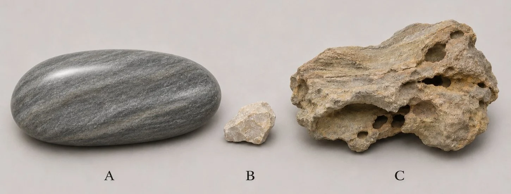

New Open Lab · Astronomy & metrology
From Parallax to Picoseconds
Fire a virtual lunar laser, explore Apollo reflectors and tidal recession, then build an Arduino ultrasonic echo-ranging instrument.
RANDALL YOUNG · EXPERIENCE BEFORE EQUATION
Experiments you can try, instruments you can build, and models you can test.
New Open Lab · Astronomy & metrology
Fire a virtual lunar laser, explore Apollo reflectors and tidal recession, then build an Arduino ultrasonic echo-ranging instrument.

New experiment · Active Independence · Source prototype
Build a personal mobility monitor. Explore walking velocity, motion quality and a proposed composite, then test the instrument against independent timing and step counts.

Open Laboratory · CORE 10 · C2G
Measure oxygen production, calibrate a balloon and explore the biological science behind C2G Paper 2. Teacher and student guides, theory PDF, Python and data templates.

C2G · Biochemical research benchmark
Compare published enzyme measurements and complementary peroxide-management mechanisms. Explore the biological research behind the Open Lab.

Flagship activity
Pluck a ruler and follow the motion from the original bench photo to live traces, measured ringdown, and a model you can try.

Research portal · Three papers and Open Lab
From PDP-8 architecture to evolutionary peroxide management and AI-assisted inquiry. Three scholarly tracks, an open laboratory and the preserved primate enhancer companion study. Photo: Todd Dailey, CC BY-SA 2.0.

New exhibit · Classroom inquiry design
Which rock is more nearly spherical? Invent a rule another team can repeat, then test what your rule misses.

New exhibit · Release preview
Compare two workload prescriptions and follow a documented Android prototype walkthrough.

Premier CORE 10 activity
Follow a tea light from grams of fuel to joules in the water, compare heating rates, and account for where the rest of the energy went.

Physical calculus
Make time measurable with a cup and scale. Calibrate the flow, try the original interactive lab, and transfer the clock to an inclined plane.

Kitchen Inquiry Lab
Make a dilution series, measure how much light gets through, and use the calibration to identify an unknown.

Current experiment
Run a marked 11-meter leg and see why a stopwatch and a wearable answer two different questions.

Instrument workshop
See original dashboards and build a wireless voltmeter, frequency meter, scale, ToF ruler, or thermometer.

Robotics · Interactive simulation
Make a map from ranges and bearings. Then change the heading and see what a repeatable measurement still gets wrong.

ROBOT_EDU · Classroom preview
Repeat a short drive command and use a tape measure and a motion trace to decide whether the car did what you asked.

Mathematics
Start with the cart that reverses direction. Learn why total distance and net change are not the same thing.

Curriculum
Use an ordinary cup of water to distinguish the heat it gains from the electricity an appliance uses.
Looking for work beyond this gallery? Browse the project inventory or search the public repositories.